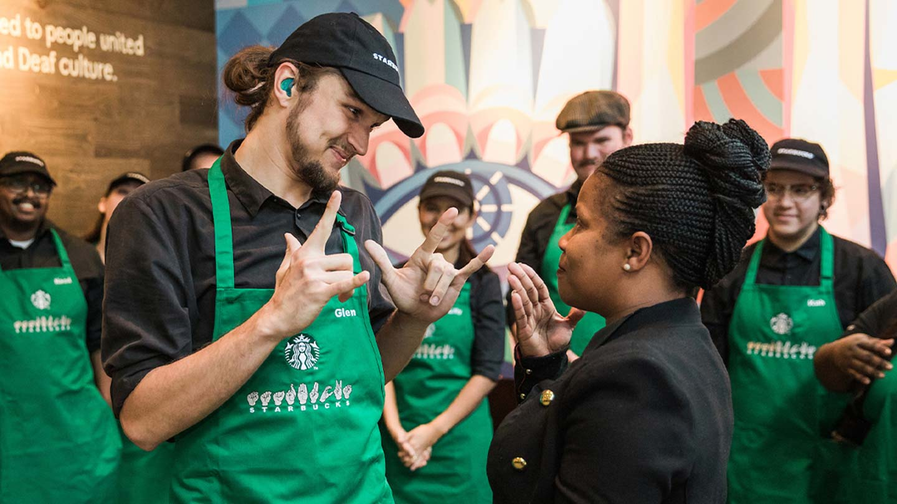

Our story begins in 1971 along the cobblestone streets of Seattle’s historic Pike Place Market. It was here where Starbucks opened its first store, offering fresh-roasted coffee beans, tea and spices from around the world for our customers to take home. Our name was inspired by the classic tale, “Moby-Dick,” evoking the seafaring tradition of the early coffee traders. Ten years later, a young New Yorker named Howard Schultz would walk through these doors and become captivated with Starbucks coffee from his first sip. After joining the company in 1982, a different cobblestone road would lead him to another discovery. It was on a trip to Milan in 1983 that Howard first experienced Italy’s coffeehouses, and he returned to Seattle inspired to bring the warmth and artistry of its coffee culture to Starbucks. By 1987, we swapped our brown aprons for green ones and embarked on our next chapter as a coffeehouse. Starbucks would soon expand to Chicago and Vancouver, Canada and then on to California, Washington, D.C. and New York. By 1996, we would cross the Pacific to open our first store in Japan, followed by Europe in 1998 and China in 1999. Over the next two decades, we would grow to welcome millions of customers each week and become a part of the fabric of tens of thousands of neighborhoods all around the world. In everything we do, we are always dedicated to Our Mission: to inspire and nurture the human spirit – one person, one cup, and one neighborhood at a time.

It takes many hands to craft the perfect cup of coffee – from the farmers who tend to the red-ripe coffee cherries, to the master roasters who coax the best from every bean, and to the barista who serves it with care. We are committed to the highest standards of quality and service, embracing our heritage while innovating to create new experiences to savor.We like to say that we are not in the coffee business serving people, but in the people business serving coffee. Our employees – who we call partners – are at the heart of the Starbucks experience. We are committed to making our partners proud and investing in their health, well-being and success and to creating a culture of belonging where everyone is welcome.
Starbucks was founded in 1971 by Jerry Baldwin, Zev Siegl, and Gordon Bowker at Seattle's Pike Place Market. During the early 1980s, they sold the company to Howard Schultz who – after a business trip to Milan, Italy – decided to convert the coffee bean store into a coffee shop serving espresso-based drinks. As chief executive officer from 1986 to 2000, Schultz's first tenure led to an aggressive expansion of the franchise, first in Seattle, then across the West Coast of the United States. Schultz was succeeded by Orin Smith who ran the company for five years and positioned Starbucks as a large player in fair trade coffee, increasing sales to US$5 billion. Jim Donald served as chief executive officer from 2005 to 2008, orchestrating a large-scale earnings expansion. Schultz returned as CEO during the financial crisis of 2007–08 and spent the succeeding decade growing the company's market share, expanding its offerings, and reorienting the brand around corporate social responsibility. Kevin Johnson, the current CEO, succeeded Schultz in 2017. In March 2022, Starbucks announced that Schultz would return as CEO in April 2022. In addition to drinks and food, many stores carry Starbucks' official merchandise, such as mugs, tumblers, scoops, and coffee presses. There are also several select "Starbucks Evenings" locations that offer beer, wine, and appetizers. Starbucks-brand coffee, ice cream, and bottled cold coffee drinks are sold at grocery stores in the United States and other countries. In 2010, the company began its Starbucks Reserve program for single-origin coffees and high-end coffee shops. It planned[needs update] to open 1,000 Reserve coffee shops by the end of 2017.[5] Starbucks operates six roasteries with tasting rooms and 43 coffee bars as part of the program. The latest roastery location opened on Chicago's Magnificent Mile in November 2019, and is the world's largest Starbucks location. The company has been subject to multiple controversies related to its business practices. Conversely, its franchise has commanded substantial brand loyalty, market share, and company value.
Page 1 Page 3